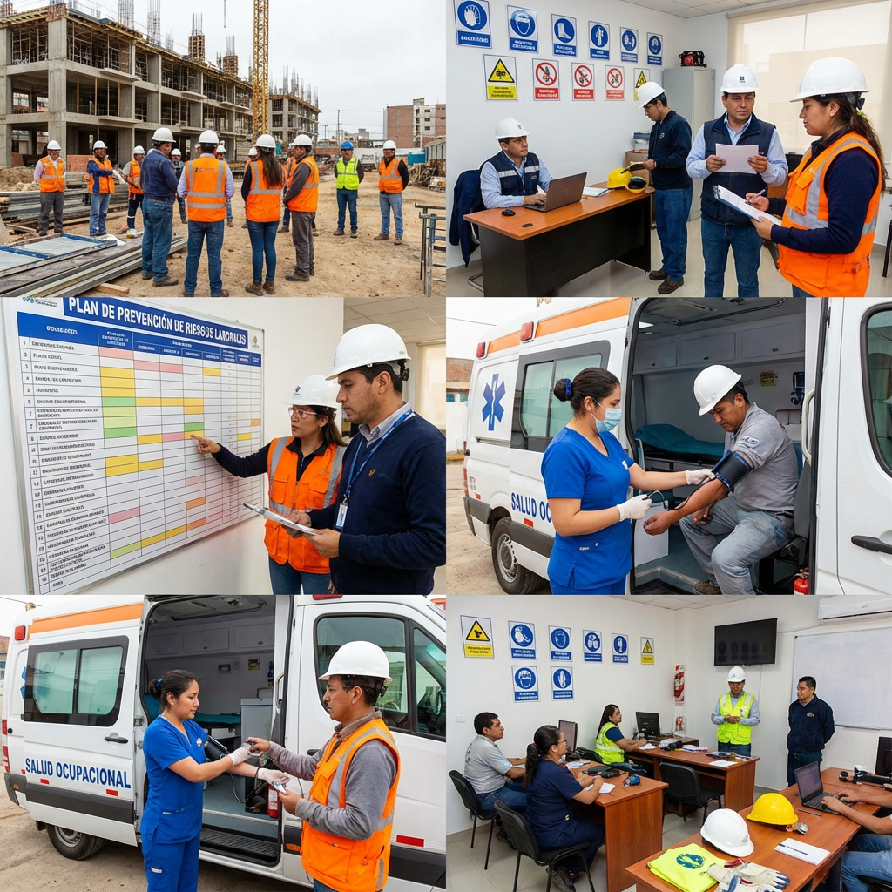

01
Servicio principal
Plan de Prevención de Riesgos Laborales
Elaboración técnica completa del Plan de Prevención exigido por el Sistema Único de Trabajo (SUT). Garantizamos que tu empresa cumpla con todas las disposiciones del Ministerio de Trabajo.
- Diagnóstico inicial de la situación de la empresa
- Elaboración técnica del plan según normativa vigente
- Registro en el Sistema Único de Trabajo (SUT)
- Documentación auditable y verificable
- Actualizaciones anuales incluidas en planes vigentes
02

Salud laboral
Salud Ocupacional
Programas de vigilancia de la salud de los trabajadores, orientados a la prevención de enfermedades profesionales y al bienestar integral del talento humano.
- Programa de vigilancia epidemiológica
- Fichas médicas ocupacionales
- Identificación de enfermedades profesionales
- Protocolos de atención a incidentes y accidentes
- Registro y reporte al IESS y Ministerio de Trabajo
03

Medio ambiente
Gestión Ambiental
Implementación de sistemas de gestión ambiental que permiten a tu empresa cumplir con la normativa del Ministerio del Ambiente y reducir el impacto de sus operaciones.
- Identificación de aspectos e impactos ambientales
- Plan de manejo de residuos sólidos y líquidos
- Programa de reducción de emisiones
- Registros ambientales y reportes regulatorios
- Integración con el Plan de Prevención SUT
04

Cumplimiento
Asesoría y Auditorías SST
Acompañamiento especializado durante inspecciones del Ministerio de Trabajo. Realizamos auditorías internas previas para identificar y corregir no conformidades antes de las visitas oficiales.
- Auditorías internas de SST
- Acompañamiento en inspecciones del Ministerio
- Identificación y corrección de no conformidades
- Informes técnicos post-auditoría
- Plan de acción correctiva y preventiva